倒立振子の制作に挑戦してみた！ 第3回:倒立振子、ついに立つ！
倒立振子をArduinoとジャイロセンサで作ってみたら想定より難しかった【回路・プログラム有】
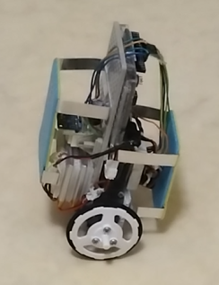
完成模型
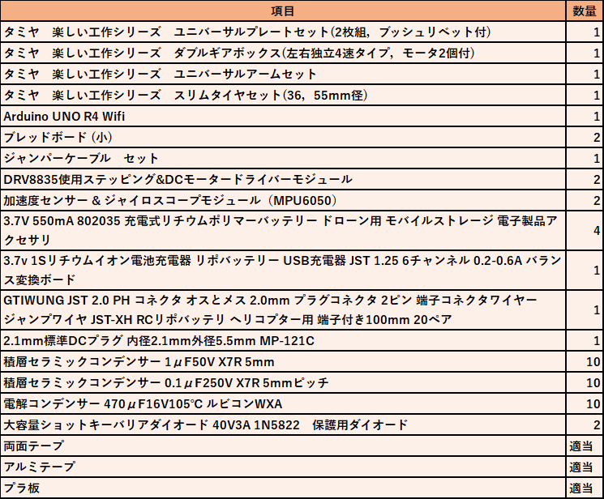
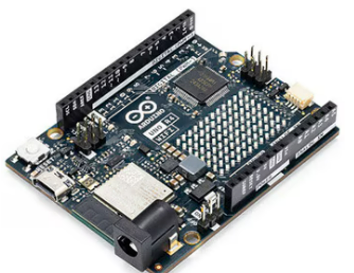
Arduino UNO R4 Wifi
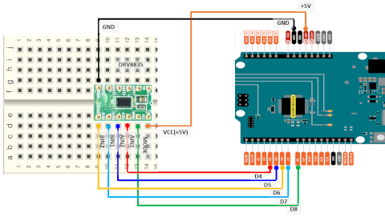
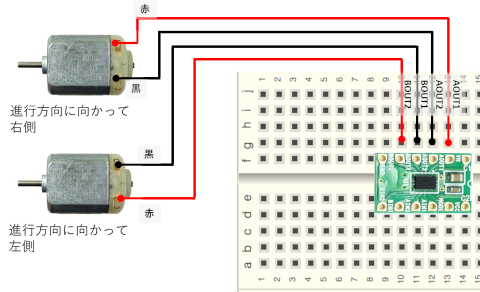
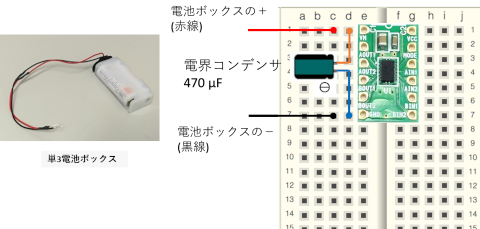
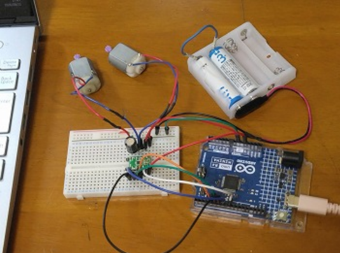
実際の配線の様子
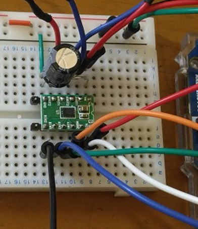
DRV8835周り
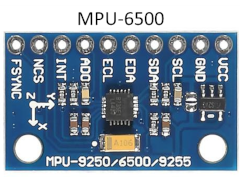
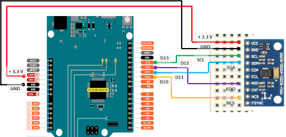
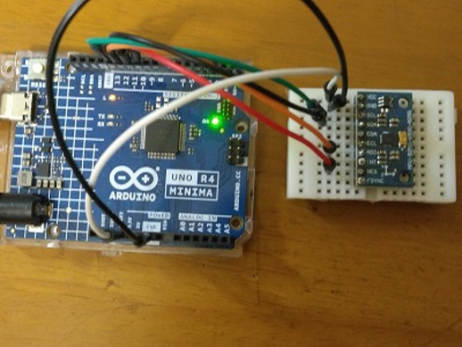
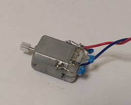
モータはFA-130型。モータ軸のギアは8歯である。
ノイズ対策として、モータ-端子間、端子-ボディ間には0.1μFのコンデンサをはんだ付けする。電流リード線も同時にはんだ付けする。
モータ固定部品でコンデンサが外れないように注意。しっかりはんだ付けする。
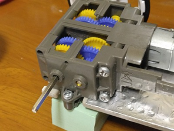
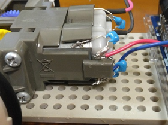
ギアボックスに組み込み(ギア比は114.7:1)、ユニバーサルボードの端に固定する。
ユニバーサルボードの端を少し切り取り、裏側のバー状の部品とねじ止めする。
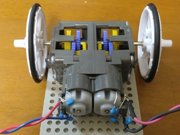
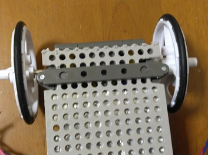
タイヤは直径55 mmのものを用いる。
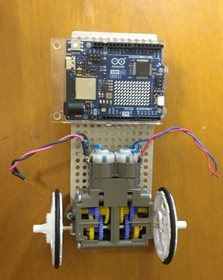
Arduinoは、ユニバーサルボート表面のモータギアボックスの隣に、両面テープでしっかり張り付ける。
模型の高さをできるだけ低くしたいので横向き(電源コネクタ、USBコネクタが横にくるように)取り付ける。
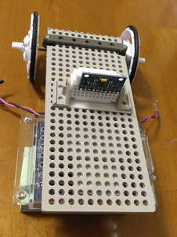
ユニバーサルボード裏面のほぼ中央に、両面テープを使ってMPU6500を取り付ける。模型の重心に近い位置が良い。
素子は小型のブレッドボードに差し込み、倒立振子が真っすぐ立った時にセンサーの面がほぼ水平になるように固定する。
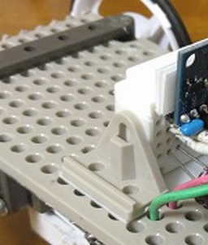
表面のArduinoから、裏面のMPU6500に、ユニバーサルボードの穴を通してジャンパー線が配線できるような位置にする。ノイズ対策のため配線はなるべく短くしたい。
L型の部品などを使い、振動してもずれないように両側からしっかり固定する。
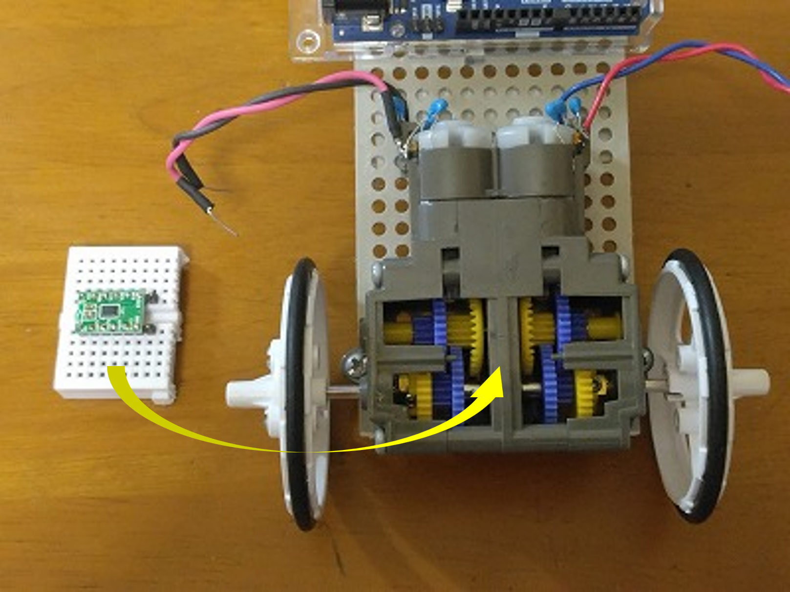
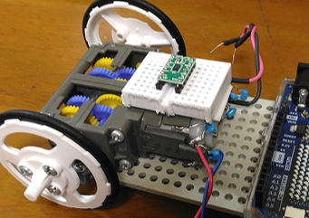
ユニバーサルボード表面のギアボックスの上に、モータドライバDRV8835を差し込んだ小型のブレッドボードを両面テープで固定する。これも高さを抑えるため。
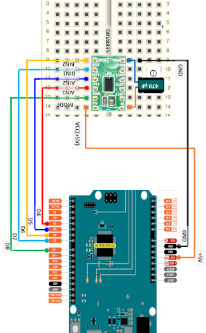
ArduinoとモータドライバDRV8835を配線する。
電源入力部には、ノイズ対策として470 μFの電解コンデンサを取り付ける。念を入れるなら2個並列に取り付ける。
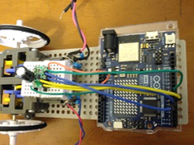
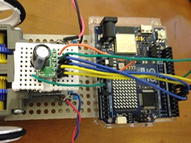
ArduinoとモータドライバDRV8835を配線する。
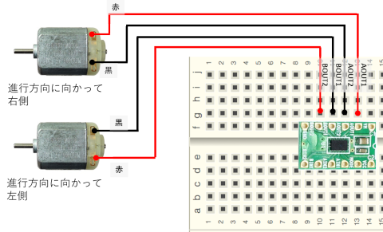
モータ2個とDRV8835の配線。後の確認試験で回転が逆だったら赤線と黒線を入れ替えれば良い。
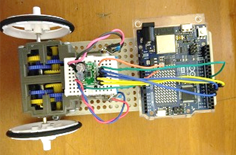
モータ2個とDRV8835を配線する。
ノイズの発生を抑えるため、モータのリード線は捩っている。
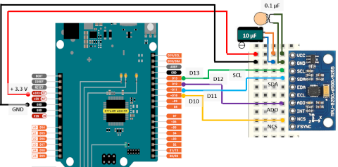
ArduinoとMPU6500を配線する。
電源入力部には、ノイズ対策として10μFの電解コンデンサと0.1pFのマイカ(セラミック)コンデンサを取り付ける。
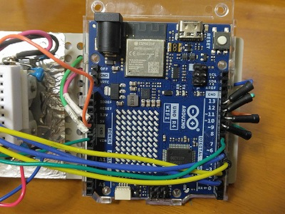
ArduinoとMPU6500はユニバーサルボードの表と裏にあるので、ボートの穴をうまく利用する。
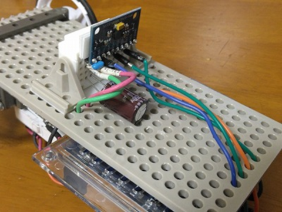
ノイズが入らないように、できるだけ短い配線にする。
ノイズ対策として、グラウンドはArduinoから配線する。(スター接続)
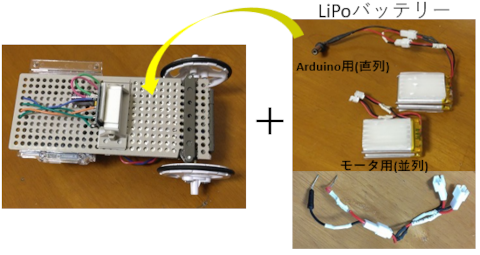
電池は軽量なLiPo電池(3.7V、550mAh)を用いる。
モータ用に、2個の電池を並列に接続するケーブルを製作。コネクタ(JST 2.0 PH 2.0mm)を端に取り付ける(オス)。また、ピン-コネクタ( メス)のジャンパー線を作る。
Arduino用には、2個の電池を直列に接続するケーブルを製作。コネクタを端に取り付ける(オス)。また、DCプラグ(外径5.5mm、内径2.1mm)-コネクタの(メス)ケーブルを作る。
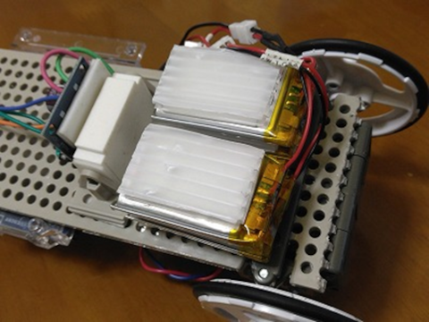
LiPo電池を2個重ねたものを二つ並べ、ユニバーサルボード裏面のMPU6500の下側に取り付ける。
取り付け時にバッテリーを変形させないようにプラ板を保護用に張り付けた方が良い。
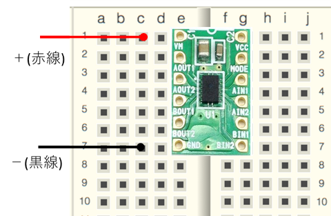
モータ用(3.7V、並列)のジャンパー線をモータドライバDRV8835に接続する。
ブレッドボード空いている穴に差し込む。
Arduino用(7.4V、直列)のケーブルは動かす時に電源プラグに接続する。
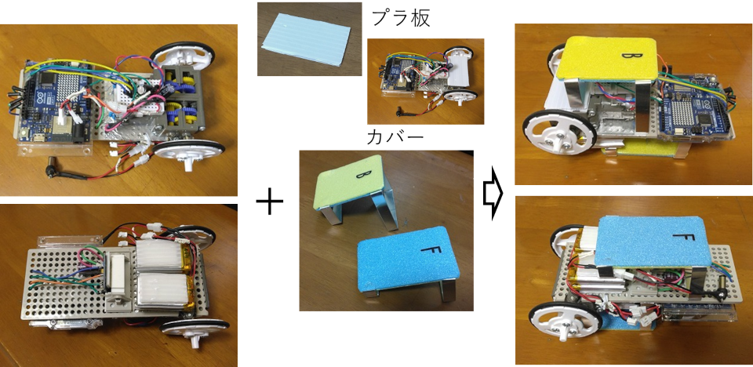
転倒してもケーブルやセンサーを壊さないようカバーを取り付けよう。
0.5mm厚アルミ板や、プラ板、カラーボード等できるだけ軽くつくる。両面テープで取り付ける。"前"、"後"が容易に判別できるようにすると便利。
リード線がタイヤに絡まないように適当に固定する。
これで組立完了です。お疲れ様でした！
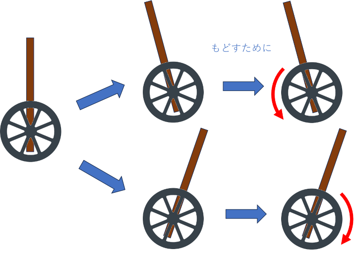
傾きと車輪の回転の向き
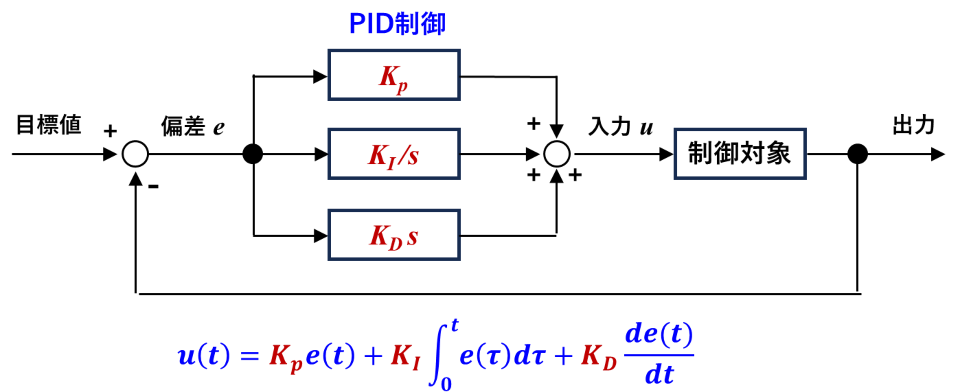
PID制御の流れ
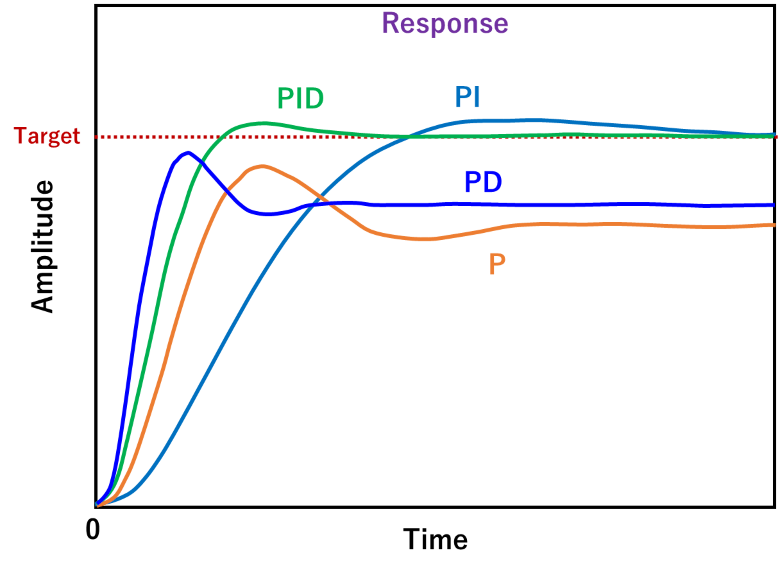
PID制御による応答の様子
調整の流れ
// 制御パラメータの初期値
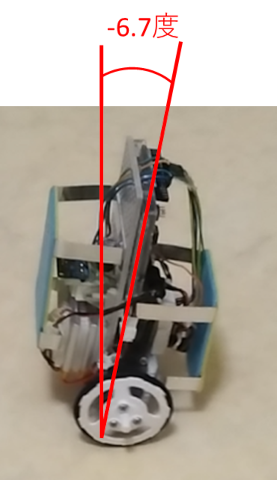
// 出力を計算する
Power = Kp * P * (1. + Ks * abs(P)) + Ki * I + Kd * D;
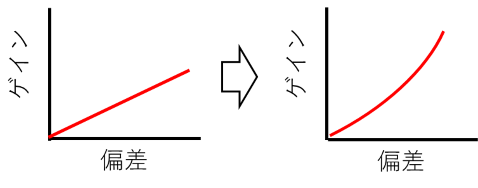
KpのみKp + Ks
Power = Power + Kpos * pos + Kvel * vel; // 位置のFB
float Powerlim = constrain(Power, -255., 255.);// 255.に制限されるので
pos = Kposdec * pos + Powerlim * dt; // 位置
vel = (pos - prevPos) / dt;
prevPos = pos;
// モータのPWM出力
pwm = constrain(abs((int)Power), V_MIN, V_MAX); // 255に制限する
// ローパスフィルタ
D_filtered = Kdfilt * D_filtered + (1. - Kdfilt) * D_raw;
D = D_filtered;
// ローパスフィルタ
P_filtered = Kpfilt * P_filtered + (1. - Kpfilt) * P_raw;
P = P_filtered;
これらの調整で、「5分以上」安定に倒立させることができれば、成功です!
ほぼ最終形に近い(もう少し改善の余地あり)
chrome://flags/#enable-web-bluetooth
// 操作コマンド
if (cmd == "f") target_cmd += 1.4;
if (cmd == "b") target_cmd -= 1.4;
if (cmd == "r"){
turn_cmd += 60.;
target_cmd += 0.8; // 少し前進する
}
if (cmd == "l"){
turn_cmd -= 60.;
target_cmd += 0.8; // 少し前進する
}
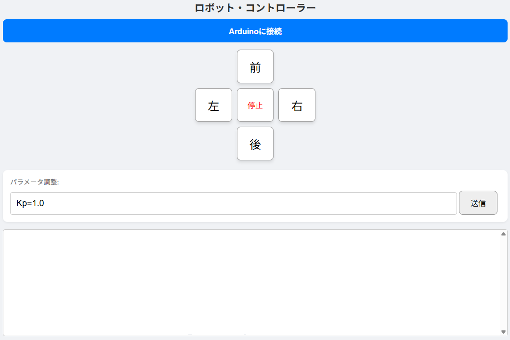
WEB上のコントロールパネル
コントロール中